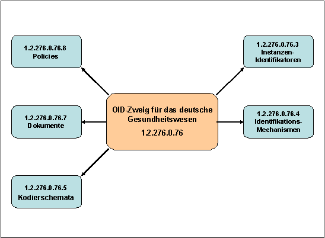

Elektronische Gesundheitskarte und Telematikinfrastruktur
Spezifikation
Festlegung von OIDs
| Version | 3.13.0 |
| Revision | 571839 |
| Stand | 23.01.2023 |
| Status | freigegeben |
| Klassifizierung | öffentlich |
| Referenzierung | gemSpec_OID |
Änderungen zur Vorversion
Anpassungen des vorliegenden Dokumentes im Vergleich zur Vorversion können Sie der nachfolgenden Tabelle entnehmen.
Dokumentenhistorie
| Version |
Stand |
Kap./ Seite |
Grund der Änderung, besondere Hinweise |
Bearbeitung |
|---|---|---|---|---|
| 3.0.0 | 02.08.17 | Initialversion Online-Rollout (Stufe 2.1) | ||
| Einarbeitung Änderungsliste P15.1 | ||||
| 3.1.0 | 18.12.17 | Einarbeitungen der Änderungen zum OPB1 Release 1.6.4-0 und Änderungen zur Version 3.0.0 | gematik | |
| 3.2.0 | 14.05.18 | freigegeben | gematik | |
| 3.3.0 | 18.12.18 | ePA-Inhalte ergänzt |
gematik |
|
| 3.4.0 | 15.05.19 | Einarbeitung Änderungsliste P18.1 | gematik | |
| 3.5.0 | 28.06.19 | Einarbeitung Änderungsliste P19.1 | gematik | |
| 3.6.0 | 02.10.19 | Einarbeitung Änderungsliste P20.1 | gematik | |
| 3.7.0 | 02.03.20 | freigegeben | gematik | |
| 3.8.0 | 30.06.20 | Anpassungen gemäß Scope-Themen aus Systemdesign R4.0.0 | gematik | |
| 17.07.20 | 3.5.4 | IDs ergänzt | gematik | |
| 3.9.0 | 12.11.20 | Einarbeitung Scope-Themen zu R4.0.1 |
gematik | |
| 3.10.0 | 19.02.21 | Einarbeitung P22.5 | gematik | |
| 3.10.1 | 25.08.21 | 3.5.4 | Ergänzung | gematik |
| 3.11.0 | 21.01.22 | Einarbeitung CI_Maintenance_21.2: Ergänzung Hinweis zur Nutzung der Zertifikatstyp-OIDs "oid_vk_pt_enc" und "oid_vk_eaa_enc" unter Tabelle Tab_PKI_405-02, Anpassung der Festlegungen zur Zugriffsberechtigung (Rollenprofile/Flagliste) für NFD, OSE und DPE gemäß gesetzlicher Vorgaben (Kap. 3.5.1.1), Hinzufügen des neuen Zertifikats-Profil C.FD.OSIG (E-Rezept Zertifikatsprofil mit KeyUsage nonRepudiation) | gematik | |
| 3.12.0 | 29.04.22 | Einarbeitung CI_Maintenance_22.2: Änderungen der Anforderungen GS-A_4445-06 (Kap. 3.5.3 ) und GS-A_4446-06 (Kap. 3.5.4) hinsichtlich der Spezifizierung eines neuen Zertifikats-Profil C.ZD.SIG, Erweiterung des Nutzerkreises einzelner Zertifikatsfelder durch Änderung der Anforderung GS-A_4443-04 (Kap. 3.5.1.3). | gematik | |
| 3.12.1 | 12.05.2022 | Einarbeitung CI_Maintenance_22.2: Ergänzung ProfessionIDs in den Anforderungen GS-A_4443-04 (Kap. 3.5.1.3), GS-A_4445-06 (Kap. 3.5.3 ) und GS-A_4446-06 (Kap. 3.5.4) | gematik | |
| 3.12.2 | 26.08.2022 | Einarbeitung CI_Maintenance_22.4: Ergänzung einer ProfessionID in der Anforderung GS-A_4443-05 (Kap. 3.5.1.3) für DiGA-Hersteller und Anbieter , Definition neuer OIDs in der Anforderung GS-A_4446-06 als technische Rollen für X.509-Zertifikate | gematik | |
| 3.12.3 | 02.12.2022 | Einarbeitung CI_Maintenance_22.5: Korrektur DiGA-Schreibweise | gematik | |
| 3.13.0 | 23.01.2023 | Einarbeitung CI_Maintenance_22.7: Beantragung einer technischen Rollen-OID und Spezifikationsanpassung | gematik |
Die vorliegende übergreifende Spezifikation definiert Anforderungen für den Themenbereich PKI, die bei der Realisierung (bzw. dem Betrieb) von Produkttypen der TI zu beachten sind. Diese Anforderungen sind als übergreifende Regelungen relevant für Interoperabilität und Verfahrenssicherheit.
In diesem Dokument werden die Object Identifier (OIDs), die im Rahmen der Einführung der elektronischen Gesundheitskarte im deutschen Gesundheitssystem genutzt und ausgewertet werden, verbindlich festgelegt. Dies sind OIDs für Objekte, für Rollen und Dokumente.
Das Dokument richtet sich an Hersteller und Anbieter von Produkten der TI
Dieses Dokument enthält normative Festlegungen zur Telematikinfrastruktur des deutschen Gesundheitswesens. Der Gültigkeitszeitraum der vorliegenden Version und deren Anwendung in Zulassungs- oder Abnahmeverfahren wird durch die gematik GmbH in gesonderten Dokumenten (z. B. Dokumentenlandkarte, Produkttypsteckbrief, Leistungsbeschreibung) festgelegt und bekannt gegeben.
Schutzrechts-/Patentrechtshinweis
Die nachfolgende Spezifikation ist von der gematik allein unter technischen Gesichtspunkten erstellt worden. Im Einzelfall kann nicht ausgeschlossen werden, dass die Implementierung der Spezifikation in technische Schutzrechte Dritter eingreift. Es ist allein Sache des Anbieters oder Herstellers, durch geeignete Maßnahmen dafür Sorge zu tragen, dass von ihm aufgrund der Spezifikation angebotene Produkte und/oder Leistungen nicht gegen Schutzrechte Dritter verstoßen und sich ggf. die erforderlichen Erlaubnisse/Lizenzen von den betroffenen Schutzrechtsinhabern einzuholen. Die gematik GmbH übernimmt insofern keinerlei Gewährleistungen.
Dieses Dokument legt nur die OIDs fest, die speziell für den Aufbau und den Betrieb der Telematikinfrastruktur gemäß § 291 a SGB V benötigt werden. Allgemein nutzbare OIDs, wie z. B. die OIDs der auch (aber nicht nur) im Gesundheitswesen genutzten kryptographischen Verfahren, werden an anderer Stelle definiert und mit OIDs gekennzeichnet.
Anforderungen als Ausdruck normativer Festlegungen werden durch eine eindeutige ID sowie die dem RFC 2119 [RFC2119] entsprechenden, in Großbuchstaben geschriebenen deutschen Schlüsselworte MUSS, DARF NICHT, SOLL, SOLL NICHT, KANN gekennzeichnet
Sie werden im Dokument wie folgt dargestellt:
<AFO-ID> - <Titel der Afo>
Text / Beschreibung
[<=]
Dabei umfasst die Anforderung sämtliche zwischen Afo-ID und Textmarken angeführten Inhalte.
Themen, die noch intern geklärt werden müssen oder eine Entscheidung, sind wie folgt im Dokument gekennzeichnet:
| Beispiel für einen offenen Punkt. |
Die Einführung der eGK basiert auf einer Vielzahl von Konzepten, Spezifikationen und sonstigen Beschreibungen. In einigen der Spezifikationen werden Schlüsselpaare und Zertifikate aus PK-Infrastrukturen beschrieben, die den jeweiligen Eigentümern eindeutig zugeordnet werden und zur Authentisierung, zum Signieren und zum Verschlüsseln genutzt werden.
Bei Umsetzung und Betrieb der Telematikinfrastruktur (TI) müssen Informationen ausgetauscht werden: sowohl in Dokumenten (z. B. Spezifikationen, Policies) als auch personenbezogene Informationen, wie z. B. Zertifikate. Dieser Austausch soll standardisiert erfolgen sowie die Bezeichnung und Identifizierung von Objekten und Konzepten muss umkehrbar eindeutig sein. Dies gilt speziell, da sich Sender und Empfänger nicht kennen können.
Unterschied zwischen Identifikationen (IDs) und Kodierungen: Eine ID deutet auf eine Instanz eines Objektes hin, z. B. eine bestimmte Person (z. B. ein Arzt) oder eine bestimmte Institution (z. B. ein Krankenhaus). Eine Kodierung hingegen kennzeichnet einen Typ: Typ des Leistungserbringers (z. B. Arzt) oder Typ der Institution (z. B. Arztpraxis). Bei dieser Art der Kodierung geht es somit nicht um ein bestimmtes Objekt, sondern um den zugeordneten Objekttyp.
Dafür werden OID (Object Identifier) genutzt. Es gilt folgende Definition:
Ein OID ist ein weltweit eindeutiger Bezeichner, der benutzt wird, um ein Informationsobjekt zu benennen. Ein OID stellt einen Knoten in einem hierarchisch zugewiesenen Namensraum dar, der durch den ASN.1-Standard definiert ist. Jeder Knoten ist durch eine Folge von Nummern eindeutig gekennzeichnet, die seine Position – beginnend an der Wurzel des Baumes – angibt. Neue Knoten zur eigenen Verwendung können bei den entsprechenden Autoritäten des übergeordneten Knotens beantragt werden. Die allgemeinen Regeln für die Vergabe und Registrierung von OIDs sind in den Normen ISO/IEC 9834 und DIN 66334 festgelegt. Die Verwaltung des OID-Baumes und die Sicherstellung der Eindeutigkeit von OIDs basieren auf der Übertragung der Zuständigkeit für den untergeordneten Knoten an den Besitzer einer OID.
Objekte im Sinne der OID-Definition sind persistente, wohl definierte Informationen, Definitionen oder Spezifikationen und werden als Identifikationen (IDs) und Kodierungen wiedergegeben.
Damit die Eindeutigkeit der OID weltweit sichergestellt werden kann, werden in [ISO9834-1] Strukturen definiert, innerhalb derer die jeweiligen Identifier zugeordnet werden. Für die weltweite OID-Vergabe wurde eine Baumstruktur gewählt. Dabei werden bestimmte Abschnitte (Äste) durch festgelegte Organisationen verwaltet und die jeweils gültigen OIDs in einem von diesen Organisationen verantworteten Register veröffentlicht.
Eine OID hat keine semantische Bedeutung: Theoretisch könnte für jedes Objekt eine beliebige, weltweit eindeutige Kennung gewählt werden. Es hat sich aber bewährt, hierarchisch gegliederte Strukturen aufzubauen (siehe Kap. 2.1). Es muss betont werden, dass diese Gliederungen keine Bedeutung im Sinne einer organisatorischen Zuordnung haben, sondern nur der Zuweisung von Verantwortung zu bestimmten Knoten und damit der einfachen Interpretation der darunterliegenden Zweige dienen.
Innerhalb der internationalen Festlegungen von OID-Strukturen hat das deutsche Gesundheitswesen die Wurzel-OID 1.2.276.0.76 zugewiesen bekommen. Diese Wurzel-OID wird vom DIMDI (Deutsches Institut für Medizinische Dokumentation und Information) verwaltet. Die weitere Strukturierung wird in Abbildung 1 gezeigt:

Abbildung 1: Unterstruktur der OIDs für das deutsche Gesundheitswesen
Zur Koordinierung der Vergabe von OIDs für den hier beschriebenen Zweck wurde eine AG OID des Kuratoriums für Fragen der Klassifikation im Gesundheitswesen (KKG) beim Bundesministerium für Gesundheit gegründet. Die AG OID erstellt Regeln für die Vergabe von OIDs im deutschen Gesundheitswesen und ist für die Einhaltung dieser Regeln verantwortlich. Sie berät bei Erweiterungen und Änderungen des zentralen OID-Konzeptes.
Die AG OID des KKG wird vom DIMDI koordiniert. Sie ist mit Vertretern aus der Selbstverwaltung und von Standardisierungsorganisationen besetzt.
Die AG OID des KKG gibt Empfehlungen ab, insbesondere
Insbesondere darf eine Veränderung der Zuständigkeit für den Knoten 1.2.276.0.76 nur durch einen einstimmigen Beschluss der AG OID des KKG erfolgen.
Detaillierte Vorgaben für die Vergabe von OIDs im deutschen Gesundheitswesen für die in diesem Dokument beschriebenen Zwecke werden in dem gesonderten Dokument [DIMDI_OID] festgelegt, das von der AG OID des KKG erstellt und herausgegeben wird.
Von den beteiligten Organisationen ist am 15.05.2008 beschlossen worden, alle OIDs in diesem Dokument mit Ausnahme der OID-Festlegung für Instanzen (siehe Kapitel 3.4) im Zweig 1.2.276.0.76.4 ohne weitere Unterteilung anzusiedeln.
GS-A_4439
Die gematik MUSS sicherstellen, dass die Vergabe aller OIDs im deutschen Gesundheitswesen, die für Aufbau und Betrieb der Telematikinfrastruktur notwendig sind, unterhalb der Wurzel-OID 1.2.276.0.76 erfolgt. Ausnahmen sind OIDs, die eine Bedeutung über dieses Gebiet hinaus haben (z. B. kryptographische Algorithmen).
<=Für alle im Folgenden dargestellten Festlegungen zur Vergabe der OIDs gilt: Die Listen zeigen die bisher festgelegten Werte und werden bei Bedarf erweitert. Dabei sind der Prozess der Registrierung und die dafür festgelegten Regeln der Vergabe zu beachten, die nicht Gegenstand dieses Dokuments sind.
Eine OID (intern oder extern) ist erst dann für die TI gültig, wenn sie im entsprechenden Register publiziert ist. Damit kann z. B. auch eine Testphase vom Wirkbetrieb abgegrenzt werden. Die jeweilige Organisation ist für die OID-Vergabe und die weiteren Verzweigungen ab dem von ihr verantworteten Knoten verantwortlich.
Im Gesundheitswesen sind verschiedene Instanzen tätig. Diese Instanzen sollen durch OIDs identifizierbar sein. Unter den entsprechenden Knoten können auch instanzeigene Zweige geführt werden, in denen z. B. Dokumente, die nur in der jeweiligen Instanz benötigt werden, mit einer OID versehen werden können.
GS-A_4441
Die gematik MUSS sicherstellen, dass die im Gesundheitswesen tätigen Instanzen für die Nutzung in der TI mit OIDs entsprechend der Tabelle Tab_PKI_401 referenziert werden.
<=Tabelle 1: Tab_PKI_401 OID-Festlegung Instanz
| OID-Referenz in anderen Dokumenten |
Beschreibung der Instanz |
OID |
|---|---|---|
| oid_kbv |
KBV Kassenärztliche Bundesvereinigung |
1.2.276.0.76.3.1.1 |
| oid_baek |
Bundesärztekammer |
1.2.276.0.76.3.1.95 |
| oid_kzbv |
Kassenzahnärztliche Bundesvereinigung KZBV |
1.2.276.0.76.3.1.99 |
| oid_bzaek |
Bundeszahnärztekammer |
1.2.276.0.76.3.1.96 |
| oid_abda |
ABDA - Bundesvereinigung Deutscher Apothekerverbände |
tbd |
| oid_bak |
Bundesapothekerkammer |
tbd |
| oid_dav |
Deutscher Apothekerverband |
tbd |
| oid_dkg |
Deutsche Krankenhausgesellschaft DKG |
1.2.276.0.76.3.1.49 |
| oid_bptk |
Bundespsychotherapeutenkammer BPTK |
1.2.276.0.76.3.1.90 |
| oid_gematik |
gematik Gesellschaft für Telematikanwendungen der Gesundheitskarte mbH |
1.2.276.0.76.3.1.91 |
Zur Identifikation, zum Signieren und zum Verschlüsseln werden auf den in der TI eingesetzten Chipkarten Zertifikate gespeichert. Diese Zertifikate enthalten z. B. Informationen über Rollen, Institutionen, zugrunde liegende Policies und zu nutzende Algorithmen. Damit auswertende Systeme die Einhaltung der dafür gemachten Vorgaben überprüfen können, werden OIDs genutzt. Parallel dazu werden in den Zertifikaten für bestimmte Objekte auch textuelle Beschreibungen abgelegt, um eine auch für den Menschen leicht verständliche Bezeichnung verfügbar zu haben.
Auf der eGK werden verschiedene administrative und medizinische Daten gespeichert; außerdem erlaubt die eGK den Zugriff auf medizinische Daten, die über die TI in den jeweiligen Fachanwendungen abrufbar sind. Dabei muss sichergestellt werden, dass das Lesen, Ändern und Löschen dieser Daten nur durch im Gesetz definierte Gruppen von Berechtigten unter der Kontrolle des Karteninhabers möglich wird. Um dies technisch gewährleisten zu können, sind in den verschiedenen Zertifikaten der Zugriffsberechtigten und der zugehörenden Organisationen Felder für die Definition von Rollen festgelegt und über OIDs abgebildet.
In der Spezifikation [gemSpec_HBA_ObjSys] ist festgelegt, dass in den X.509-Zertifikaten des HBA die Rolle des jeweiligen Akteurs sowohl textuell (im Feld „ProfessionItem“) als auch als OID („ProfessionOID“) hinterlegt werden muss. Die Festlegung für beide Werte ist in der folgenden Tabelle enthalten.
Es wurde zusätzlich festgelegt, dass in jedem personenbezogenen Zertifikat die Rolle des jeweiligen Akteurs sowohl textuell (im Feld „ProfessionItem“) als auch als OID („ProfessionOID“) hinterlegt werden muss. Deshalb wurde auch die Rolle „Versicherter“ definiert, die in den entsprechenden Feldern der Zertifikate der Versicherten gespeichert werden muss.
GS-A_4442-02
Ein TSP-X.509 MUSS die Berufsgruppen für die Nutzung in X.509-Zertifikaten der TI mit OIDs entsprechend der Tabelle Tab_PKI_402-01 referenzieren
Tabelle 2: Tab_PKI_402-01 OID-Festlegung Rolle im X.509-Zertifikat für Berufsgruppen
| OID-Referenz in anderen Dokumenten |
ProfessionItem (Beschreibung der Berufsgruppe) |
ProfessionOID (OID der Berufsgruppe) |
|---|---|---|
| oid_arzt (Hinweis: Ein(e) ärztliche(r) Psychotherapeut/-in und weitere Berufsgruppen "Ärztinnen/Ärzte in Öffentlichen Gesundheitsdiensten" sowie "Fachärztinnen/Fachärzte der Arbeits- /Betriebsmedizin werden mit dem ProfessionOID {oid_arzt} bezeichnet bzw. mit dem ProfessionItem „Ärztin/Arzt“ beschrieben.) |
Ärztin/Arzt (Hinweis: Ein(e) ärztliche(r) Psychotherapeut/-in und weitere Berufsgruppen "Ärztinnen/Ärzte in Öffentlichen Gesundheitsdiensten" sowie "Fachärztinnen/Fachärzte der Arbeits- /Betriebsmedizin werden mit dem ProfessionOID {oid_arzt} bezeichnet bzw. mit dem ProfessionItem „Ärztin/Arzt“ beschrieben.) |
1.2.276.0.76.4.30 |
| oid_zahnarzt |
Zahnärztin/Zahnarzt |
1.2.276.0.76.4.31 |
| oid_apotheker |
Apotheker/-in |
1.2.276.0.76.4.32 |
| oid_apothekerassistent |
Apothekerassistent/-in |
1.2.276.0.76.4.33 |
| oid_pharmazieingenieur |
Pharmazieingenieur/-in |
1.2.276.0.76.4.34 |
| oid_pharm_techn_assistent |
pharmazeutisch-technische/-r Assistent/-in |
1.2.276.0.76.4.35 |
| oid_pharm_kaufm_angestellter |
pharmazeutisch-kaufmännische/-r Angestellte |
1.2.276.0.76.4.36 |
| oid_apothekenhelfer |
Apothekenhelfer/-in |
1.2.276.0.76.4.37 |
| oid_apothekenassistent |
Apothekenassistent/-in |
1.2.276.0.76.4.38 |
| oid_pharm_assistent |
Pharmazeutische/-r Assistent/-in |
1.2.276.0.76.4.39 |
| oid_apothekenfacharbeiter |
Apothekenfacharbeiter/-in |
1.2.276.0.76.4.40 |
| oid_pharmaziepraktikant |
Pharmaziepraktikant/-in |
1.2.276.0.76.4.41 |
| oid_famulant |
Stud.pharm. oder Famulant/-in |
1.2.276.0.76.4.42 |
| oid_pta_praktikant |
PTA-Praktikant/-in |
1.2.276.0.76.4.43 |
| oid_pka_auszubildender |
PKA Auszubildende/-r |
1.2.276.0.76.4.44 |
| oid_psychotherapeut (Hinweis: Ein(e) ärztliche(r) Psychotherapeut/-in wird auch mit dem ProfessionOID {oid_arzt} bezeichnet bzw. mit dem ProfessionItem „Ärztin/Arzt“ beschrieben.) |
Psychotherapeut/-in (Hinweis: Ein(e) ärztliche(r) Psychotherapeut/-in wird auch mit dem ProfessionOID {oid_arzt} bezeichnet bzw. mit dem ProfessionItem „Ärztin/Arzt“ beschrieben.) |
1.2.276.0.76.4.45 |
| oid_ps_psychotherapeut |
Psychologische/-r Psychotherapeut/-in |
1.2.276.0.76.4.46 |
| oid_kuj_psychotherapeut |
Kinder- und Jugendlichenpsychotherapeut/-in |
1.2.276.0.76.4.47 |
| oid_rettungsassistent |
Rettungsassistent/-in |
1.2.276.0.76.4.48 |
| oid_versicherter |
Versicherte/-r |
1.2.276.0.76.4.49 |
| oid_notfallsanitaeter |
Notfallsanitäter/-in |
1.2.276.0.76.4.178 |
| oid_pfleger-hpc | Gesundheits- und Krankenpfleger/-in, Gesundheits- und Kinderkrankenpfleger/-in | 1.2.276.0.76.4.232 |
| oid_altenpfleger-hpc | Altenpfleger/-in | 1.2.276.0.76.4.233 |
| oid_pflegefachkraft-hpc | Pflegefachfrauen und Pflegefachmänner | 1.2.276.0.76.4.234 |
| oid_hebamme-hpc | Hebamme | 1.2.276.0.76.4.235 |
| oid_physiotherapeut-hpc | Physiotherapeut/-in | 1.2.276.0.76.4.236 |
| oid_augenoptiker-hpc | Augenoptiker/-in und Optometrist/-in | 1.2.276.0.76.4.237 |
| oid_hoerakustiker-hpc | Hörakustiker/-in | 1.2.276.0.76.4.238 |
| oid_orthopaedieschuhmacher-hpc | Orthopädieschuhmacher/-in | 1.2.276.0.76.4.239 |
| oid_orthopaedietechniker-hpc | Orthopädietechniker/-in | 1.2.276.0.76.4.240 |
| oid_zahntechniker-hpc | Zahntechniker/-in | 1.2.276.0.76.4.241 |
| oid_ergotherapeut-hpc | Ergotherapeut/-in | 1.2.276.0.76.4.274 |
| oid_logopaede-hpc | Logopäde/Logopädin | 1.2.276.0.76.4.275 |
| oid_podologe-hpc | Podologe/Podologin | 1.2.276.0.76.4.276 |
| oid_ernaehrungstherapeut-hpc | Ernährungstherapeut/-in | 1.2.276.0.76.4.277 |
| Falls OIDs für NamingAuthorities genutzt werden sollen, wird hier die entsprechende Tabelle eingefügt. |
Gemäß [gemSpec_SMC_ObjSys] muss in den X.509-Zertifikaten der SMC-B der Institutionstyp der jeweiligen Institution sowohl textuell („ProfessionItem“) als auch als OID („ProfessionOID“) hinterlegt werden. Die Festlegung für beide Werte ist in der folgenden Tabelle enthalten.
Die Vorgabe wurde auch für die X.509-Zertifikate weiterer Institutionen übernommen.
GS-A_4443-05
Ein TSP-X.509 nonQES MUSS die Institutionen für die Nutzung in X.509-Zertifikaten der TI mit OIDs entsprechend der Tabelle Tab_PKI_403-02 referenzieren.
Tabelle 3: Tab_PKI_403-04 OID-Festlegung Institutionen im X.509-Zertifikat der SMC-B
| OID-Referenz in anderen Dokumenten |
Profession Item (Beschreibung der Institution) |
ProfessionOID (OID der Institution) |
|---|---|---|
| oid_praxis_arzt (Hinweis: Die Praxis bzw. Betriebsstätte eines/-r ärztlichen Psychotherapeuten/-in wird mit dem ProfessionOID {oid_praxis_arzt} bezeichnet bzw. mit dem ProfessionItem „Betriebsstätte Arzt“ beschrieben.) |
Betriebsstätte Arzt (Hinweis: Die Praxis bzw. Betriebsstätte eines/-r ärztlichen Psychotherapeuten/-in wird mit dem ProfessionOID {oid_praxis_arzt} bezeichnet bzw. mit dem ProfessionItem „Betriebsstätte Arzt“ beschrieben.) |
1.2.276.0.76.4.50 |
| oid_zahnarztpraxis |
Zahnarztpraxis |
1.2.276.0.76.4.51 |
| oid_praxis_psychotherapeut (Hinweis: Die Praxis bzw. Betriebsstätte eines/-r ärztlichen Psychotherapeuten/-in wird mit dem ProfessionOID {oid_praxis_arzt} bezeichnet bzw. mit dem ProfessionItem „Betriebsstätte Arzt“ beschrieben.) |
Betriebsstätte Psychotherapeut (Hinweis: Die Praxis bzw. Betriebsstätte eines/-r ärztlichen Psychotherapeuten/-in wird mit dem ProfessionOID {oid_praxis_arzt} bezeichnet bzw. mit dem ProfessionItem „Betriebsstätte Arzt“ beschrieben.) |
1.2.276.0.76.4.52 |
| oid_krankenhaus |
Krankenhaus |
1.2.276.0.76.4.53 |
| oid_oeffentliche_apotheke |
Öffentliche Apotheke |
1.2.276.0.76.4.54 |
| oid_krankenhausapotheke |
Krankenhausapotheke |
1.2.276.0.76.4.55 |
| oid_bundeswehrapotheke |
Bundeswehrapotheke |
1.2.276.0.76.4.56 |
| oid_mobile_einrichtung_ rettungsdienst |
Betriebsstätte Mobile Einrichtung Rettungsdienst |
1.2.276.0.76.4.57 |
| oid_bs_gematik |
Betriebsstätte gematik |
1.2.276.0.76.4.58 |
| oid_kostentraeger |
Betriebsstätte Kostenträger |
1.2.276.0.76.4.59 |
| oid_leo_zahnaerzte |
Betriebsstätte Leistungserbringerorganisation Vertragszahnärzte |
1.2.276.0.76.4.187 |
| oid_adv_ktr |
AdV-Umgebung bei Kostenträger |
1.2.276.0.76.4.190 |
| oid_leo_kassenaerztliche_vereinigung |
Betriebsstätte Leistungserbringerorganisation Kassenärztliche Vereinigung |
1.2.276.0.76.4.210 |
| oid_bs_gkv_spitzenverband |
Betriebsstätte GKV-Spitzenverband |
1.2.276.0.76.4.223 |
| oid_leo_krankenhausverband | Betriebsstätte Mitgliedsverband der Krankenhäuser | 1.2.276.0.76.4.226 |
| oid_leo_dktig | Betriebsstätte der Deutsche Krankenhaus TrustCenter und Informationsverarbeitung GmbH | 1.2.276.0.76.4.227 |
| oid_leo_dkg | Betriebsstätte der Deutschen Krankenhausgesellschaft | 1.2.276.0.76.4.228 |
| oid_leo_apothekerverband | Betriebsstätte Apothekerverband | 1.2.276.0.76.4.224 |
| oid_leo_dav | Betriebsstätte Deutscher Apothekerverband | 1.2.276.0.76.4.225 |
| oid_leo_baek | Betriebsstätte der Bundesärztekammer | 1.2.276.0.76.4.229 |
| oid_leo_aerztekammer | Betriebsstätte einer Ärztekammer | 1.2.276.0.76.4.230 |
| oid_leo_zahnaerztekammer | Betriebsstätte einer Zahnärztekammer | 1.2.276.0.76.4.231 |
| oid_leo-kbv | Betriebsstätte der Kassenärztlichen Bundesvereinigung | 1.2.276.0.76.4.242 |
| oid_leo-bzaek | Betriebsstätte der Bundeszahnärztekammer | 1.2.276.0.76.4.243 |
| oid_leo-kzbv | Betriebsstätte der Kassenzahnärztlichen Bundesvereinigung | 1.2.276.0.76.4.244 |
| oid_institution-pflege | Betriebsstätte Gesundheits-, Kranken- und Altenpflege | 1.2.276.0.76.4.245 |
| oid_institution-geburtshilfe | Betriebsstätte Geburtshilfe | 1.2.276.0.76.4.246 |
| oid_praxis-physiotherapeut | Betriebsstätte Physiotherapie | 1.2.276.0.76.4.247 |
| oid_institution-augenoptiker | Betriebsstätte Augenoptiker | 1.2.276.0.76.4.248 |
| oid_institution-hoerakustiker | Betriebsstätte Hörakustiker | 1.2.276.0.76.4.249 |
| oid_institution-orthopaedieschuhmacher | Betriebsstätte Orthopädieschuhmacher | 1.2.276.0.76.4.250 |
| oid_institution-orthopaedietechniker | Betriebsstätte Orthopädietechniker | 1.2.276.0.76.4.251 |
| oid_institution-zahntechniker | Betriebsstätte Zahntechniker | 1.2.276.0.76.4.252 |
| oid_institution-rettungsleitstellen | Rettungsleitstelle | 1.2.276.0.76.4.253 |
| oid_sanitaetsdienst-bundeswehr | Betriebsstätte Sanitätsdienst Bundeswehr | 1.2.276.0.76.4.254 |
| oid_institution-oegd | Betriebsstätte Öffentlicher Gesundheitsdienst | 1.2.276.0.76.4.255 |
| oid_institution-arbeitsmedizin | Betriebsstätte Arbeitsmedizin | 1.2.276.0.76.4.256 |
| oid_institution-vorsorge-reha | Betriebsstätte Vorsorge- und Rehabilitation | 1.2.276.0.76.4.257 |
| oid_epa_ktr | ePA KTR-Zugriffsautorisierung | 1.2.276.0.76.4.273 |
| oid_pflegeberatung | Betriebsstätte Pflegeberatung nach § 7a SGB XI | 1.2.276.0.76.4.262 |
| oid_leo_psychotherapeuten | Betriebsstätte Psychotherapeutenkammer | 1.2.276.0.76.4.263 |
| oid_leo_bptk | Betriebsstätte Bundespsychotherapeutenkammer | 1.2.276.0.76.4.264 |
| oid_leo_lak | Betriebsstätte Landesapothekerkammer | 1.2.276.0.76.4.265 |
| oid_leo_bak | Betriebsstätte Bundesapothekerkammer | 1.2.276.0.76.4.266 |
| oid_leo_egbr | Betriebsstätte elektronisches Gesundheitsberuferegister | 1.2.276.0.76.4.267 |
| oid_leo_handwerkskammer | Betriebsstätte Handwerkskammer | 1.2.276.0.76.4.268 |
| oid_gesundheitsdatenregister | Betriebsstätte Register für Gesundheitsdaten | 1.2.276.0.76.4.269 |
| oid_abrechnungsdienstleister | Betriebsstätte Abrechnungsdienstleister | 1.2.276.0.76.4.270 |
| oid_pkv_verband | Betriebsstätte PKV-Verband | 1.2.276.0.76.4.271 |
| oid_praxis-ergotherapeut | Ergotherapiepraxis | 1.2.276.0.76.4.278 |
| oid_praxis-logopaede | Logopaedische Praxis | 1.2.276.0.76.4.279 |
| oid_praxis-podologe | Podologiepraxis | 1.2.276.0.76.4.280 |
| oid_praxis-ernaehrungstherapeut | Ernährungstherapeutische Praxis | 1.2.276.0.76.4.281 |
| oid_bs-weitere-kostentraeger | Betriebsstätte Weitere Kostenträger im Gesundheitswesen | 1.2.276.0.76.4.284 |
| oid_org-gesundheitsversorgung | Weitere Organisationen der Gesundheitsversorgung | 1.2.276.0.76.4.285 |
| oid_kim-anbieter | KIM-Hersteller und -Anbieter | 1.2.276.0.76.4.286 |
| oid_diga | DiGA-Hersteller und -Anbieter | 1.2.276.0.76.4.282 |
Für den Betrieb einer Certification Authority (CA), werden verbindliche Regeln aufgestellt. Diese enthalten Vorgaben für den Betrieb der CA und für die Ausgabe, Verwaltung und Nutzung der von ihr ausgegebenen Zertifikate. Die Dokumente, in denen diese Regeln niedergelegt sind, heißen Policy-Dokumente. In den X.509-Zertifikaten wird über eine OID auf die für das jeweilige Zertifikat gültigen Policies referenziert. Damit kann jederzeit überprüft werden, welches Vertrauen einem bestimmten Zertifikat entgegengebracht werden kann. Die im deutschen Gesundheitswesen im Rahmen der TI genutzten Zertifikate dürfen nur von zugelassenen CAs ausgegeben werden, die nach genau festgelegten und vertraglich vereinbarten Policies arbeiten. Für ein bestimmtes Zertifikat kann die Einhaltung mehrerer Policies vorgeschrieben sein (z. B. Einhaltung der Basis-Policy der gematik, zusätzlich einschränkende Vorgaben durch die ergänzende Policy eines Sektors für seine Karten).
GS-A_4444
Ein TSP-X.509 und der Anbieter des TSL-Dienstes MÜSSEN die Certificate Policies für die Nutzung in X.509-Zertifikaten der TI mit OIDs entsprechend der Tabelle Tab_PKI_404 referenzieren.
<=Tabelle 4: Tab_PKI_404 OID-Festlegung Certificate Policies in X.509-Zertifikaten
| OID-Referenz in anderen Dokumenten |
Policy-Beschreibung |
Policy-OID |
Zugehörendes Dokument |
|---|---|---|---|
| oid_policy_hba_cp |
Policy HPC QES, SIG, AUT, ENC |
1.2.276.0.76.4.145 |
[CP-HPC] Version 1.0.5 |
| oid_policy_gem_or_cp |
Policy für alle Zertifikate ab Online-Rollout (eGK, SMC, Komponenten-zertifikate) außer für das TSL-Signerzertifikat |
1.2.276.0.76.4.163 |
[gemRL_TSL_SP_CP] Version 1.2.0 (neue Komplett-CP inkl. Komp.-Zertifikate und Festlegungen zu Testzertifikaten) |
| oid_policy_gem_tsl_signer |
Policy für das TSL-Signerzertifikat |
1.2.276.0.76.4.176 |
[gemSpec_TSL] Version 1.2.0 (Die Policy muss die Vorgaben für die Ausstellung des TSL-Signerzertifikates gemäß [gemSpec_TSL] erfüllen.) |
In verschiedenen Anwendungen in der TI reicht die Prüfung einer Rolle nicht aus. Es muss sichergestellt werden, dass auch die Art des Zertifikates ermittelt werden kann, da Zertifikate und die dazugehörenden Schlüssel nur für bestimmte, genau definierte Aufgaben genutzt werden dürfen. Dabei reicht die im Feld „keyusage“ des X.509-Zertifikates angegebene Festlegung unter Umständen nicht aus. Die einzelnen Zertifikatstypen der verschiedenen Karten werden deshalb über eine OID kodiert.
GS-A_4445-06
Ein TSP-X.509 MUSS die Zertifikatstypen für die Nutzung in X.509-Zertifikaten der TI mit OIDs entsprechend der Tabelle Tab_PKI_405-03 referenzieren.
<=
Tabelle #: Tab_PKI_405-03 OID-Festlegung Zertifikatstyp in X.509-Zertifikaten
| OID-Referenz in anderen Dokumenten |
Name des Zertifikatstyp |
Zertifikatstyp-OID |
Spezifiziert in |
|---|---|---|---|
| oid_egk_qes |
C.CH.QES |
1.2.276.0.76.4.66 |
[gemSpec_PKI] |
| oid_egk_sig |
C.CH.SIG |
1.2.276.0.76.4.67 |
nur zu Testzwecken |
| oid_egk_enc |
C.CH.ENC |
1.2.276.0.76.4.68 |
[gemSpec_PKI] |
| oid_egk_encv |
C.CH.ENCV |
1.2.276.0.76.4.69 |
[gemSpec_PKI] |
| oid_egk_aut |
C.CH.AUT |
1.2.276.0.76.4.70 |
[gemSpec_PKI] |
| oid_egk_autn |
C.CH.AUTN |
1.2.276.0.76.4.71 |
[gemSpec_PKI] |
| oid_egk_enc_alt |
C.CH.ENC_ALT |
1.2.276.0.76.4.211 |
derzeit nicht verwendet |
| oid_egk_aut_alt |
C.CH.AUT_ALT |
1.2.276.0.76.4.212 |
[gemSpec_PKI] |
| oid_hba_qes |
C.HP.QES |
1.2.276.0.76.4.72 |
[CertsBÄK#1] |
| oid_hba_sig |
C.HP.SIG |
1.2.276.0.76.4.73 |
nur zu Testzwecken |
| oid_hba_enc |
C.HP.ENC |
1.2.276.0.76.4.74 |
[CertsBÄK#1] |
| oid_hba_aut |
C.HP.AUT |
1.2.276.0.76.4.75 |
[CertsBÄK#1] |
| oid_smc_b_enc |
C.HCI.ENC |
1.2.276.0.76.4.76 |
[gemSpec_PKI] |
| oid_smc_b_aut |
C.HCI.AUT |
1.2.276.0.76.4.77 |
[gemSpec_PKI] |
| oid_smc_b_osig |
C.HCI.OSIG |
1.2.276.0.76.4.78 |
[gemSpec_PKI] |
| oid_ak_aut |
C.AK.AUT |
1.2.276.0.76.4.79 |
[gemSpec_PKI] |
| oid_nk_vpn |
C.NK.VPN |
1.2.276.0.76.4.80 |
[gemSpec_PKI] |
| oid_vpnk_vpn |
C.VPNK.VPN |
1.2.276.0.76.4.81 |
[gemSpec_PKI] |
| oid_smkt_aut |
C.SMKT.AUT |
1.2.276.0.76.4.82 |
[gemSpec_PKI] |
| oid_sak_aut |
C.SAK.AUT |
1.2.276.0.76.4.113 |
[gemSpec_PKI] |
| oid_cm_tls_c |
C.CM.TLS-CS |
1.2.276.0.76.4.175 |
[gemSpec_PKI] |
| oid_fd_tls_c |
C.FD.TLS-C |
1.2.276.0.76.4.168 |
[gemSpec_PKI] |
| oid_fd_tls_s |
C.FD.TLS-S |
1.2.276.0.76.4.169 |
[gemSpec_PKI] |
| oid_fd_aut |
C.FD.AUT |
1.2.276.0.76.4.155 |
[gemSpec_PKI] |
| oid_zd_tls_c |
C.ZD.TLS-C |
1.2.276.0.76.4.156 |
derzeit nicht verwendet |
| oid_zd_tls_s |
C.ZD.TLS-S |
1.2.276.0.76.4.157 |
[gemSpec_PKI] |
| oid_zd_aut |
C.ZD.AUT |
1.2.276.0.76.4.158 |
derzeit nicht verwendet |
| oid_vpnk_vpn_sis |
C.VPNK.VPN-SIS |
1.2.276.0.76.4.165 |
[gemSpec_PKI] |
| oid_fd_sig |
C.FD.SIG |
1.2.276.0.76.4.203 |
[gemSpec_PKI] |
| oid_fd_enc |
C.FD.ENC |
1.2.276.0.76.4.202 |
[gemSpec_PKI] |
| oid_whk_hsm_aut |
C.WHK-HSM.AUT |
1.2.276.0.76.4.213 |
derzeit nicht verwendet |
| oid_sgd_hsm_aut |
C.SGD-HSM.AUT |
1.2.276.0.76.4.214 |
[gemSpec_PKI] |
| oid_vk_pt_enc | C.HP.ENC | 1.2.276.0.76.4.62 | [BÄK_ePA] |
| oid_vk_eaa_enc | C.HP.ENC | 1.3.6.1.4.1.24796.1.10 | [BÄK_eAA] |
| oid_fd_osig | C.FD.OSIG | 1.2.276.0.76.4.283 | [gemSpec_PKI] |
| oid_zd_sig | C.ZD.SIG | 1.2.276.0.76.4.287 | [gemSpec_PKI] |
Hinweis: Die Zertifikatstyp-OIDs „oid_vk_pt_enc“ und „oid_vk_eaa_enc“ werden lediglich im Rahmen KIM/QES-Feldtest aufgrund der Zertifikatsprüfung HBA-Vorläuferkarten der Generation 0 (HBAqsig/ZOD2.0) durch den Konnektor verwendet. Für die Zertifikatsausstellung neuer HBA-Karten sind diese OIDs nicht relevant.
In der TI werden neben den Rollen für Personen und Institutionen auch technische Rollen definiert, an die bestimmte Berechtigungen geknüpft werden. In den entsprechenden X.509-Zertifikaten muss die technische Rolle als OID („ProfessionOID“) hinterlegt werden.
Da die in der Tabelle Tab_PKI_406-02 aufgeführten technischen Rollen nur in bestimmten Zertifikaten vorkommen können, werden neben den Rolleninformationen gültige Zertifikatsprofile benannt, in denen diese technischen Rollen auftreten dürfen. Diese Zertifikatsprofile werden in [gemSpec_PKI] definiert.
GS-A_4446-09
Ein TSP-X.509 MUSS die technischen Rollen für die Nutzung in X.509-Zertifikaten der TI mit OIDs entsprechend der Tabelle Tab_PKI_406-* referenzieren.
Tabelle 5: Tab_PKI_406-* OID-Festlegung technische Rolle in X.509-Zertifikaten
| OID-Referenz in anderen Dokumenten |
ProfessionItem (Beschreibung der technischen Rolle) |
ProfessionOID (OID der technischen Rolle) |
Zertifikatsprofil(e) in denen die ProfessionOID im Element Admission vorkommen darf |
|---|---|---|---|
| oid_vsdd |
Versichertenstammdatendienst |
1.2.276.0.76.4.97 |
C.FD.TLS-S |
| oid_ocsp |
Online Certificate Status Protocol |
1.2.276.0.76.4.99 |
In keinem Zertifikatsprofil verwendet. |
| oid_cms |
Card Management System |
1.2.276.0.76.4.100 |
C.FD.TLS-S |
| oid_ufs |
Update Flag Service |
1.2.276.0.76.4.101 |
C.FD.TLS-S |
| oid_ak |
Anwendungskonnektor |
1.2.276.0.76.4.103 |
C.AK.AUT |
| oid_nk |
Netzkonnektor |
1.2.276.0.76.4.104 |
C.NK.VPN |
| oid_kt |
Kartenterminal |
1.2.276.0.76.4.105 |
C.SMKT.AUT |
| oid_sak | Signaturanwendungs-komponente | 1.2.276.0.76.4.119 | C.SAK.AUT |
| oid_int_vsdm |
Intermediär VSDM |
1.2.276.0.76.4.159 |
C.FD.TLS-S, C.FD.TLS-C |
| oid_konfigdienst |
Konfigurationsdienst |
1.2.276.0.76.4.160 |
C.ZD.TLS-S |
| oid_vpnz_ti |
VPN-Zugangsdienst-TI |
1.2.276.0.76.4.161 |
C.VPNK.VPN C.ZD.TLS-S |
| oid_vpnz_sis |
VPN-Zugangsdienst-SIS |
1.2.276.0.76.4.166 |
C.VPNK.VPN-SIS |
| oid_cmfd |
Clientmodul |
1.2.276.0.76.4.174C |
C.CM.TLS-CS |
| oid_vzd_ti |
Verzeichnisdienst-TI |
1.2.276.0.76.4.171 |
C.ZD.TLS-S C.FD.SIG |
| oid_komle |
KOM-LE Fachdienst |
1.2.276.0.76.4.172 |
C.FD.TLS-S C.FD.TLS-C |
| oid_komle-recipient-emails |
KOM-LE S/MIME Attribut recipient-emails |
1.2.276.0.76.4.173 |
In keinem Zertifikatsprofil verwendet. |
| oid_stamp |
Störungsampel |
1.2.276.0.76.4.184 |
C.ZD.TLS-S |
| oid_tsl_ti |
TSL-Dienst-TI |
1.2.276.0.76.4.189 |
C.ZD.TLS-S |
| oid_wadg |
Weitere elektronische Anwendungen des Gesundheitswesens sowie für die Gesundheitsforschung n. P. 291a Abs. 7 Satz 3 SGB V |
1.2.276.0.76.4.198 |
C.FD.TLS-S C.FD.SIG C.FD.AUT C.FD.ENC |
| oid_epa_authn |
ePA Authentisierung |
1.2.276.0.76.4.204 |
C.FD.TLS-S C.FD.SIG |
| oid_epa_authz |
ePA Autorisierung |
1.2.276.0.76.4.205 |
C.FD.TLS-S C.FD.SIG |
| oid_epa_dvw |
ePA Dokumentenverwaltung |
1.2.276.0.76.4.206 |
C.FD.TLS-S |
| oid_epa_mgmt |
ePA Management |
1.2.276.0.76.4.207 |
C.FD.TLS-S C.FD.TLS-C |
| oid_epa_recovery |
ePA automatisierter Berechtigungserhalt |
1.2.276.0.76.4.208 |
C.FD.ENC |
| oid_epa_vau |
ePA vertrauenswürdige Ausführungsumgebung |
1.2.276.0.76.4.209 |
C.FD.AUT C.FD.ENC C.FD.SIG |
| oid_vz_tsp |
Zertifikatsverzeichnis TSP X.509 |
1.2.276.0.76.4.215 |
In keinem Zertifikatsprofil verwendet. |
| oid_whk1_hsm |
HSM Wiederherstellungskomponente 1 |
1.2.276.0.76.4.216 |
In keinem Zertifikatsprofil verwendet. |
| oid_whk2_hsm |
HSM Wiederherstellungskomponente 2 |
1.2.276.0.76.4.217 |
In keinem Zertifikatsprofil verwendet. |
| oid_whk |
Wiederherstellungskomponente |
1.2.276.0.76.4.218 |
In keinem Zertifikatsprofil verwendet. |
| oid_sgd1_hsm |
HSM Schlüsselgenerierungsdienst 1 |
1.2.276.0.76.4.219 |
C.SGD-HSM.AUT |
| oid_sgd2_hsm |
HSM Schlüsselgenerierungsdienst 2 |
1.2.276.0.76.4.220 |
C.SGD-HSM.AUT |
| oid_sgd |
Schlüsselgenerierungsdienst |
1.2.276.0.76.4.221 |
C.FD.TLS-S |
| oid_erp-vau | E-Rezept vertrauenswürdige Ausführungsumgebung |
1.2.276.0.76.4.258 | C.FD.ENC |
| oid_erezept | E-Rezept | 1.2.276.0.76.4.259 | C.FD.TLS-S C.FD.SIG C.FD.OSIG |
| oid_idpd | IDP-Dienst | 1.2.276.0.76.4.260 | C.FD.TLS-S C.FD.SIG |
| oid_epa_logging | ePA-Aktensystem-Logging | 1.2.276.0.76.4.261 |
C.FD.SIG |
| oid_bestandsnetze | Bestandsnetze.xml Signatur | 1.2.276.0.76.4.288 | C.ZD.SIG |
| oid_epa_vst |
ePA Vertrauensstelle | 1.2.276.0.76.4.289 | C.FD.TLS-S C.FD.ENC |
| oid_epa_fdz |
ePA Forschungsdatenzentrum | 1.2.276.0.76.4.290 | C.FD.TLS-S C.FD.ENC |
| oid_tim | TI-Messenger | 1.2.276.0.76.4.294 | C.FD.SIG |
In der TI werden für die Nutzung der Trust-service Status List (TSL) folgende Feldbezeichnungen definiert:
GS-A_4447
Der TSL-Dienst MUSS die TSL-Feldbezeichnungen für die Nutzung in der TSL der TI mit OIDs entsprechend der Tabelle Tab_PKI_407 referenzieren.
<=Tabelle 6: Tab_PKI_407 OID-Festlegung für Feldbezeichnungen in der TSL
| OID-Referenz in anderen Dokumenten |
Bezeichnung |
OID |
Zugehörendes Dokument |
|---|---|---|---|
| oid_tsl_p_loc |
TSL Primary Location |
1.2.276.0.76.4.120 |
[gemSpec_PKI] |
| oid_tsl_b_loc |
TSL Backup Location: |
1.2.276.0.76.4.121 |
[gemSpec_PKI] |
| oid_tsl_cca_cert |
Change of TSL Signer-CA Certificate |
1.2.276.0.76.4.164 |
[gemSpec_PKI] |
| oid_tsl_placeholder |
Platzhalter für eine leere TSL extension |
1.2.276.0.76.4.124 |
[gemSpec_TSL] |
| oid_cv_rootcert |
Root-CV-Zertifikat |
1.2.276.0.76.4.185 |
[gemSpec_TSL |
| oid_cv_cert |
Cross-CV-Zertifikat |
1.2.276.0.76.4.186 |
[gemSpec_TSL] |
Neben den X.509-Zertifikaten (OID-Verwendung siehe Kap. 3.5) werden in der TI auch CV-Zertifikate eingesetzt. Chipkarten der TI enthalten für die Authentisierung entsprechende Schlüsselpaare und zugehörige CV-Zertifikate.
Gemäß [EN 14890] und [TR-03110-3] wird die Berechtigung eines Zertifikatsinhabers, der auch im Besitz des zugehörigen privaten Schlüssels sein muss, in CV-Zertifikaten der Kartengeneration 2 durch eine Flagliste angegeben.
GS-A_5082
Ein TSP-CVC und der Anbieter der CVC-Root-CA MÜSSEN die Flaglisten für die Nutzung in CV-Zertifikaten der Kartengeneration 2 mit OIDs entsprechend der Tabelle Tab_PKI_408 referenzieren.
<=Tabelle 7: Tab_PKI_408 OID-Festlegung für Flag-Listen bei CV-Zertifikaten
| OID-Referenz in anderen Dokumenten |
Bezeichnung |
OID |
Zugehörendes Dokument |
|---|---|---|---|
| oid_cvc_fl_ti |
cvc_FlagList_TI |
1.2.276.0.76.4.152 |
[gemSpec_PKI] [gemSpec_COS] |
| oid_cvc_fl_cms |
cvc_FlagList_CMS |
1.2.276.0.76.4.153 |
[gemSpec_PKI] [gemSpec_COS] |
In der TI können OIDs für Objekte definiert werden, die keiner der vorher aufgeführten Kategorien zugeordnet werden können. Diese OIDs können in diesem Kapitel unter „OIDs für sonstige Objekte“ zusammengefasst werden.
Tabelle 8: Tab_PKI_409 OID-Festlegung für sonstige Objekte
| OID-Referenz in anderen Dokumenten |
Bezeichnung |
OID |
Zugehörendes Dokument |
|---|---|---|---|
| oid_ti_ecies_transport_encryption |
TI-ECIES-Transport-Encryption |
1.2.276.0.76.4.222 |
[gemSpec_Krypt] |
Es werden zunächst keine OIDs für Dokumente der gematik vergeben. Ausnahme: Policies, die über eine OID in Zertifikaten referenziert werden, siehe Kapitel 3.5.2.
| Kürzel |
Erläuterung |
|---|---|
| AUT |
Authentisierung (Authentication) |
| AUTN |
Authentisierung für Nachrichten |
| BPTK |
Bundespsychotherapeutenkammer |
| CA |
Certification Authority |
| DIMDI |
Deutsches Institut für Medizinische Dokumentation und Information |
| eGK |
Elektronische Gesundheitskarte |
| ENC |
Verschlüsselung (Encryption) |
| ENCV |
Verschlüsselung für Verordnungen |
| HBA |
Heilberufsausweis |
| ID |
Identität (Identity) |
| KKG |
Kuratorium für Fragen der Klassifikation im Gesundheitswesen beim Bundesministerium für Gesundheit |
| KOM-LE |
Kommunikation für Leistungserbringer |
| KT |
Kartenterminal |
| KV |
Kassenärztliche Vereinigung |
| KZBV |
Kassenzahnärztliche Bundesvereinigung |
| OID |
Object Identifier |
| OK |
OID-Kuratorium |
| OSIG |
Organisations-Signatur |
| PKI |
Public Key Infrastructure |
| SIS |
Secure Internet Service |
| SM |
Security Module |
| SMC |
Security Module Card |
| TLS |
Transport Layer Security |
| TSL |
Trust-service Status List |
Das Glossar wird als eigenständiges Dokument, vgl. [gemGlossar] zur Verfügung gestellt.
Die nachfolgende Tabelle enthält die Bezeichnung der in dem vorliegenden Dokument referenzierten Dokumente der gematik zur Telematikinfrastruktur. Der mit der vorliegenden Version korrelierende Entwicklungsstand dieser Konzepte und Spezifikationen wird pro Release in einer Dokumentenlandkarte definiert, Version und Stand der referenzierten Dokumente sind daher in der nachfolgenden Tabelle nicht aufgeführt. Deren zu diesem Dokument passende jeweils gültige Versionsnummer sind in der aktuellsten, von der gematik veröffentlichten Dokumentenlandkarte enthalten, in der die vorliegende Version aufgeführt wird.
| [Quelle] |
Herausgeber: Titel |
|---|---|
| [gemGlossar] |
gematik: Glossar |
| [gemRL_TSL_SP_CP] |
gematik: Certificate Policy - Gemeinsame Zertifizierungsrichtlinie für Teilnehmer der gematik-TSL |
| [gemSpec_COS] |
gematik: Spezifikation des Card Operating System (COS), Elektrische Schnittstelle |
| [gemSpec_HBA_ObjSys] |
gematik: Spezifikation des elektronischen Heilberufsausweises HBA-Objektsystem |
| [gemSpec_PKI] |
gematik: Spezifikation PKI |
| [gemSpec_SMC-B_ObjSys] |
gematik: Spezifikation der Secure Module Card SMC-B Objektsystem |
| [gemSpec_TSL] |
gematik: Spezifikation TSL-Dienst |
| [Quelle] |
Herausgeber (Erscheinungsdatum): Titel |
|---|---|
| [BÄK_eAA] |
https://www.bundesaerztekammer.de/aerzte/telematiktelemedizin/earztausweis/technische-spezifikationen/ |
| [BÄK_ePA] | https://www.bundesaerztekammer.de/fileadmin/user_upload/downloads/CP_HPC_v1.0.0_19062009.pdf |
| [BSI-TR-03110-3] |
Technical Guideline TR-03110-3, Advanced Security Mechanisms for Machine Readable Travel Documents – Part 3 – Common Specifications Version 2.10, 2012-03-20 |
| [CertsBÄK] |
Zertifikatsprofile für Basiszertifikate, Bundesärztekammer, 2005 |
| [CP-HPC] |
Bundesärztekammer et al (06.11.2012): Gemeinsame Policy für die Ausgabe der HPC – Zertifikatsrichtlinie HPC, Version 1.0.5 |
| [EN 14890-1] |
EUROPEAN STANDARD, DRAFT, prEN 14890-1, February 2008 Application Interface for smart cards used as secure signature creation devices – Part 1: Basic services |
| [EN 14890-2] |
EUROPEAN STANDARD, DRAFT, prEN 14890-2, March 2012 Application Interface for smart cards used as secure signature creation devices – Part 2: Additional services |
| [ISO9834-1] |
ISO (2005): Information technology -- Open Systems Interconnection -- Procedures for the operation of OSI Registration Authorities: General procedures and top arcs of the ASN.1 Object Identifier tree |
| [RFC2119] |
RFC 2119 (März 1997): Key words for use in RFCs to Indicate Requirement Levels S. Bradner, http://www.ietf.org/rfc/rfc2119.txt |
| [DIMDI_OID] |
DIMDI (März 2006): Verfahrensgrundlage zur Vergabe von Registrierungskennzahlen für Informationsobjekte |
Gegenüber der letzten veröffentlichten Version 1.1.0 des Dokumentes wurden eine Reihe von OIDs aus dem Dokument entfernt. Diese OIDs beziehen sich auf Dienste, Anwendungen und damit verbundene technische Rollen sowie Zertifikatstypen, die für den Online-Rollout (Stufe 1) nicht relevant sind.
Im Kontext der OIDs für Policy-Dokumente betrifft dies Dokumente, die überarbeitet, gestrichen oder zusammengefasst wurden. Durch die Bindung der Dokumentenversion an eine OID sind damit für neue bzw. überarbeitete Dokumente auch neue OIDs notwendig.
Einmal zugewiesene OIDs bleiben gültig und werden vom DIMDI nicht zurückgezogen oder neu vergeben, sie können aber als "nicht mehr zu nutzen" gekennzeichnet werden.
Nachfolgend werden die nicht mehr verwendeten OIDs gelistet. Dies erlaubt es, an anderer Stelle referenzierte OIDs einfach zuzuordnen, ob sie weiterhin verwendet (Listung im Hauptdokument) oder nicht mehr verwendet (Listung im Anhang) werden.
Tabelle 9: Nicht mehr verwendete OIDs - Rolle im X.509-Zertifikat für Berufsgruppen
| OID-Referenz in anderen Dokumenten |
ProfessionItem (Beschreibung der Berufsgruppe) |
ProfessionOID (OID der Berufsgruppe) |
|---|---|---|
| oid_mmizea |
Mitarbeiter(-in) medizinische Institution zur eGK-Anwenderunterstützung |
1.2.276.0.76.4.143 |
| oid_vmi |
Verwaltungsmitarbeiter(-in) Institution |
1.2.276.0.76.4.144 |
| oid_kv_ta |
KV Telematik Arge |
1.2.276.0.76.3.1.64 |
Tabelle 10: Nicht mehr verwendete OIDs - Institutionen im X.509-Zertifikat der SMC-B
| OID-Referenz in anderen Dokumenten |
Profession Item (Beschreibung der Institution) |
ProfessionOID (OID der Institution) |
|---|---|---|
| oid_bs_betreiber_mon_broker |
Probe-Client Broker-Betreiber |
1.2.276.0.76.4.60 |
Tabelle 11: Nicht mehr verwendete OIDs - Certificate Policies in X.509-Zertifikaten
| OID-Referenz in anderen Dokumenten |
Policy-Beschreibung |
Policy-OID |
Früher zugehörendes Dokument |
|---|---|---|---|
| oid_policy_gem_cp |
Policy eGK, SMC-B SIG, OSIG, AUT, AUTN, ENC, ENCV |
1.2.276.0.76.4.61 |
[gemTSL_SP_CP] Version 1.3.0 |
| oid_policy_sf_cp |
Policy für alle Server- und (Fach-) Dienstzertifikate |
1.2.276.0.76.4.63 |
[gemX.509_SD#8] Version 1.3.0 |
| oid_policy_k_cp |
Policy für Zertifikate des Konnektor |
1.2.276.0.76.4.64 |
[gemX.509_Kon#9] Version 1.3.0 |
| oid_policy_kt_cp |
Policy für Zertifikate des Kartenterminals |
1.2.276.0.76.4.65 |
[gemPKI_KT# 5.4.2] Version 1.1.0 |
| oid_policy_muste_cp |
Policy für alle Zertifikate für Musterkarten (eGK, HBA, SMC) |
1.2.276.0.76.4.112 |
[gemTSL_SP_CP_Test] Version 1.0.0 |
| oid_policy_gem_ or_cp_smcb_erprobung |
Policy für SMC-B- Zertifikate während Erprobung |
1.2.276.0.76.4.170 |
[gemRL_SMC-B_ORS1] Version 1.0.0 (CP mit sektorspezif. Ergänzungen nur für SMC-B während Erprobung) |
Tabelle 12: Nicht mehr verwendete OIDs - Zertifikatstyp in X.509-Zertifikaten
| OID-Referenz in anderen Dokumenten |
Name des Zertifikatstyp |
Zertifikatstyp-OID |
Früher spezifiziert in |
|---|---|---|---|
| oid_sf_ssl |
C.SF.SSL |
1.2.276.0.76.4.83 |
[gemX.509_SD#5.7.2] |
| oid_sf_ssl_c |
C.SF.SSL-C |
1.2.276.0.76.4.84 |
[gemX.509_SD#5.7.2] |
| oid_sf_ssl_s |
C.SF.SSL-S |
1.2.276.0.76.4.85 |
[gemX.509_SD#5.7.2] |
| oid_sf_aut |
C.SF.AUT |
1.2.276.0.76.4.86 |
[gemX.509_SD#5.7.3] |
| oid_sf_enc |
C.SF.ENC |
1.2.276.0.76.4.87 |
[gemX.509_SD#5.7.5] |
| oid_sks_gcs |
C.SKS.GCS |
1.2.276.0.76.4.142 |
[gemPKI_SKS#4.3.7.1] |
Tabelle 13: Nicht mehr verwendete OIDs - technische Rolle in X.509-Zertifikaten
| OID-Referenz in anderen Dokumenten |
ProfessionItem (Beschreibung der technischen Rolle) |
ProfessionOID (OID der technischen Rolle) |
Früher festgelegt in |
|---|---|---|---|
| oid_broker |
Broker |
1.2.276.0.76.4.88 |
[gemGesArch#AnhB1] |
| oid_broker_anonym |
Broker Anonymisierungsdienst |
1.2.276.0.76.4.89 |
[gemGesArch#AnhB1] |
| oid_vpnk |
VPN-Konzentrator |
1.2.276.0.76.4.90 |
[gemGesArch#AnhB1] |
| oid_vpnk_ti |
VPN-Konzentrator-TI |
1.2.276.0.76.4.91 |
[gemGesArch#AnhB1] |
| oid_vpnk_mwdn |
VPN-Konzentrator-Mehrwertdienstenetz |
1.2.276.0.76.4.92 |
[gemGesArch#AnhB1] |
| oid_trusted |
Trusted Service |
1.2.276.0.76.4.93 |
[gemGesArch#AnhB1] |
| oid_audit |
Audit Service |
1.2.276.0.76.4.94 |
[gemGesArch#AnhB1] |
| oid_sds |
Service Directory Service |
1.2.276.0.76.4.95 |
[gemGesArch#AnhB1] |
| oid_vodd |
Verordnungsdatendienst |
1.2.276.0.76.4.96 |
[gemGesArch#AnhB1] |
| oid_amdd |
Dienst für die Daten zur Prüfung der Arzneimitteltherapiesicherheit |
1.2.276.0.76.4.98 |
|
| oid_mgmtss |
Management Schnittstelle |
1.2.276.0.76.4.106 |
[gemGesArch#AnhB1] |
| oid_ths |
Treuhand-Service für Datenerhalt |
1.2.276.0.76.4.107 |
[gemGesArch#AnhB1] |
| oid_krs |
Krypto-Service |
1.2.276.0.76.4.108 |
[gemGesArch#AnhB1] |
| oid_pfdd |
Patientenfachdatendienst |
1.2.276.0.76.4.109 |
|
| oid_gcs |
Gematik Code Signing |
1.2.276.0.76.4.110 |
[gemGesArch#AnhB1] |
| oid_btmdd |
Betäubungsmitteldatendienst |
1.2.276.0.76.4.111 |
|
| oid_mon_vpnk_ti |
Probe-Client VPN-Konzentrator TI |
1.2.276.0.76.4.114 |
[gemGesArch#AnhB1] |
| oid_mon_vpnk_mwd |
Probe-Client VPN-Konzentrator Mehrwertdienste |
1.2.276.0.76.4.115 |
[gemGesArch#AnhB1] |
| oid_mon_sds |
Probe-Client SDS |
1.2.276.0.76.4.116 |
[gemGesArch#AnhB1] |
| oid_mon_audit |
Probe-Client Audit service |
1.2.276.0.76.4.117 |
[gemGesArch#AnhB1] |
| oid_mon_brokerws |
Web-Service-Simulator |
1.2.276.0.76.4.118 |
[gemGesArch#AnhB1] |
| oid_mwdd |
Mehrwertfachdienst |
1.2.276.0.76.4.141 |
[gemGesArch#AnhB1] |
Tabelle 14: Nicht mehr verwendete OIDs - OID-Festlegung für Feldbezeichnungen in der TSL
| OID-Referenz in anderen Dokumenten |
Bezeichnung |
OID |
Früher festgelegt in |
|---|---|---|---|
| oid_tsl_croot_cert |
Change of TSL Root Certificate |
1.2.276.0.76.4.122 |
[gemVerw_Zert_TI#8.11] |
| oid_tsl_csign_cert |
Change of TSL Signer Certificate |
1.2.276.0.76.4.123 |
[gemVerw_Zert_TI#8.11] |